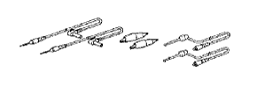

ОХЛАДИТЕЛЬ РОГ (для моделей без DPF) > УЗЛЫ И ДЕТАЛИ > Подготовка

| Тройник | - |
| Динамометрический ключ | - |
| Вакуумный насос | - |
 | 09010-3C100 | Комплект торцевых шестигранных головок | - |
 | (09013-6C100) | Торцевой шестигранный ключ 5 мм | - |
 | (09013-6C110) | Торцевой шестигранный ключ 6 мм | - |
 | 09010-3C120 | Набор торцевых головок "TORX" | - |
 | (09013-1C130) | Торцевой ключ с головкой "TORX" T40 T-типа | - |
 | 09012-2C500 | Удлиненная торцевая головка 17 мм | - |
 | 09017-1C120 | Разрезная головка 14 мм | - |
 | 09082-00040 | Электрический диагностический прибор TOYOTA | - |
|  | (09083-00150) | Комплект проводов для диагностического прибора | - |